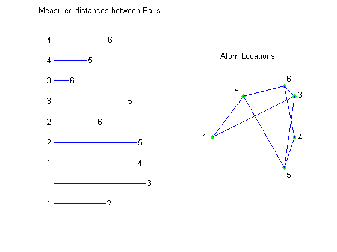
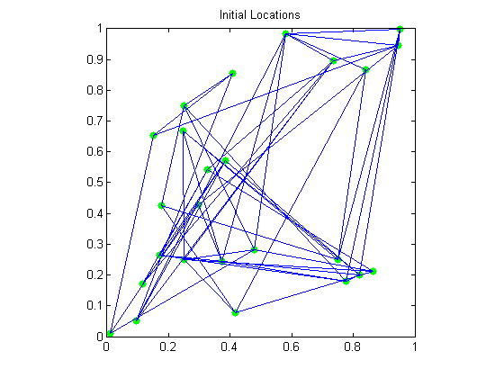
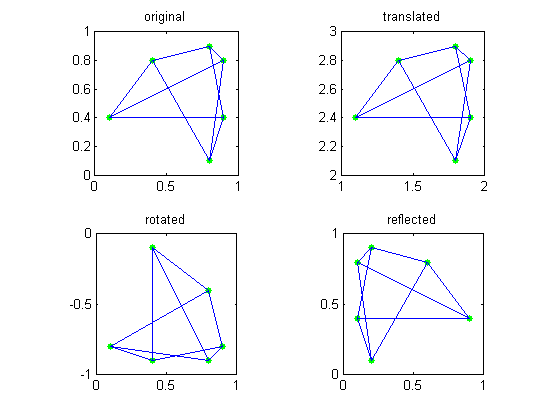
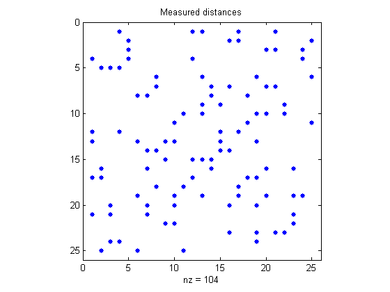
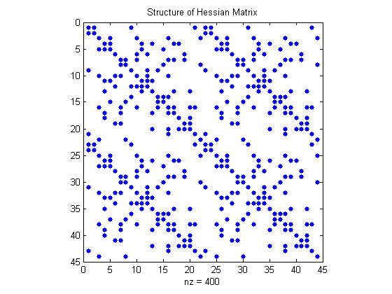
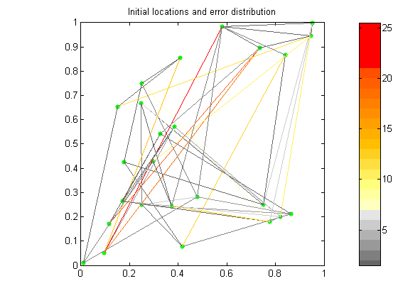
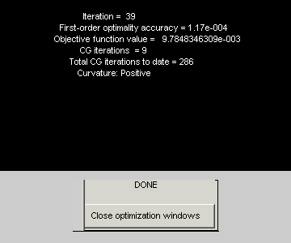
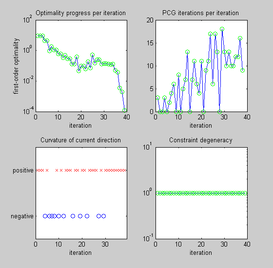
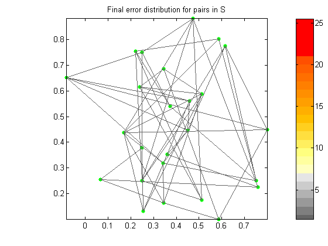
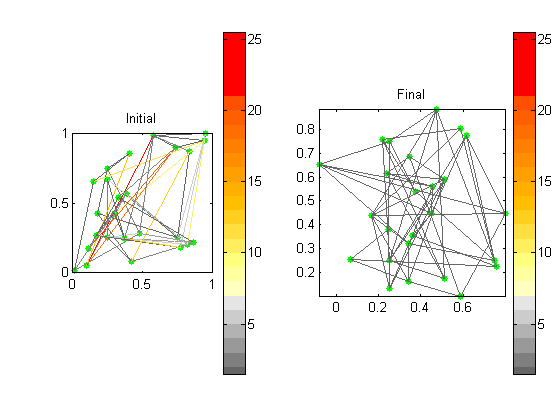

This demonstration uses the large-scale functionality in the Optimization Toolbox to solve a two-dimensional Molecule Conformation Problem. This type of problem also arises in other applications including satellite ranging and surveying.
MOLECULE CONFORMATION PROBLEM: Arrange the N atoms of a molecule in a way that the distances between specified pairs of atoms match experimental data.
A simple example is shown above. The data is on the left and the solution on the right.
load molecule; [smallI,smallJ,smalldist] = find(smallS); subplot(1,2,1); for i = 1:length(smalldist) line([0,smalldist(i)],[i i]); text(-0.07,i,sprintf('%d',smallJ(i))); text(smalldist(i)+.02,i,sprintf('%d',smallI(i))); end axis([-.1 1 0 10],'off'); title('Measured distances between Pairs'); subplot(1,2,2); plot(smallsoln(:,1),smallsoln(:,2),'g.','MarkerSize',15); for i = 1:length(smalldist), line([smallsoln(smallI(i),1) smallsoln(smallJ(i),1)], ... [smallsoln(smallI(i),2) smallsoln(smallJ(i),2)]); end textpos = smallsoln + [-.09 0;-.08 .08;.04 .01;.04 0;.03 -.07;.03 .07]; for i = 1:6 text(textpos(i,1),textpos(i,2),sprintf('%d',i)); end axis([-0.1 1 0 1.1],'off','square'); title('Atom Locations');
An optimization approach to this problem is to start off with a random configuration (shown above) and move the atoms until the configuration with the smallest error is found. Specifically, given locations for the atoms:
X = [x(1:N) y(1:N)]';
we associate an error (norm(X(i,:)-X(j,:))^2 - S(i,j)^2)^2 to each pair (i,j) in the set of measured data S. The total error, given by MMOLE(X,S), is the sum of the errors of all pairs in S. We will find a local minimizer for the error function MMOLE.
N = 25; [I,J,dist] = find(S); Xstart = [ [.25 .25]; [.25 .75]; [.75 .25]; reshape(xstart,N-3,2) ]; subplot(1,1,1); plot(Xstart(:,1),Xstart(:,2),'g.','Markersize',18); for k = 1:length(dist) line([Xstart(I(k),1) Xstart(J(k),1)],[Xstart(I(k),2) Xstart(J(k),2)]); end title('Initial Locations'); axis square;
Distances are invariant under rigid motion; translations, rotations and reflections do not effect the error function MMOLE.
In order to avoid such motions, we assume that the locations of three of the atoms are known. Since these locations are fixed, we will actually work with only 2N-6 unknowns.
% First illustration. subplot(2,2,1); plot(smallsoln(:,1),smallsoln(:,2),'g.','MarkerSize',15); for k = 1:length(smalldist) line([smallsoln(smallI(k),1) smallsoln(smallJ(k),1)], ... [smallsoln(smallI(k),2) smallsoln(smallJ(k),2)]); end axis([0 1 0 1],'square'); title('original'); % Second illustration. subplot(2,2,2); plot(1+smallsoln(:,1),2+smallsoln(:,2),'g.','MarkerSize',15); for k = 1:length(smalldist) line([1+smallsoln(smallI(k),1) 1+smallsoln(smallJ(k),1)], ... [2+smallsoln(smallI(k),2) 2+smallsoln(smallJ(k),2)]); end axis([1 2 2 3],'square'); title('translated'); % Third illustration. subplot(2,2,3); plot(smallsoln(:,2),-smallsoln(:,1),'g.','markersize',15); for k = 1:length(smalldist) line([smallsoln(smallI(k),2) smallsoln(smallJ(k),2)], ... [-smallsoln(smallI(k),1) -smallsoln(smallJ(k),1)]); end axis([0 1 -1 0],'square'); title('rotated'); % Fourth illustration. subplot(2,2,4); pts = plot(1-smallsoln(:,1),smallsoln(:,2),'g.'); set(pts,'markersize',15); for k = 1:length(smalldist) line([1-smallsoln(smallI(k),1) 1-smallsoln(smallJ(k),1)], ... [smallsoln(smallI(k),2) smallsoln(smallJ(k),2)]); end axis([0 1 0 1],'square'); title('reflected');
Let's solve an example with 25 atoms. The sparse matrix S is a 25 x 25 table. Each nonzero entry in S corresponds to a known distance between a pair of atoms.
[I,J,dist] = find(S);
subplot(1,1,1);
spy(S+S');
title('Measured distances');
 MMOLE takes the current positions of the atoms and the sparse distance matrix (the goal), and returns the distance function's current value (the error), its gradient, and its sparse Hessian.
Because H is sparse we can use a large-scale optimization algorithm to solve this optimization problem.
[val,g,H] = mmole(xstart,S);
spy(H);
title('Structure of Hessian Matrix');
 This is a plot of the atoms in their random starting locations. The error between the starting distances and the target distances is indicated by the color.
Observe that several edges have a yellow or red color. This indicates there is a big discrepancy between the current locations and the experimental data. Our goal is to minimize these errors.
xstart = [ [.25 .25]; [.25 .75]; [.75 .25]; reshape(xstart,N-3,2)]; pts = plot(xstart(:,1),xstart(:,2),'g.'); set(pts,'Markersize',15); for k = 1:length(dist) energy(k) = (dist(k)^2 - norm(xstart(I(k),:) - xstart(J(k),:))^2)^2; end colormap(energscale); numcolors = size(energscale,1); for k = 1:length(dist) line([xstart(I(k),1) xstart(J(k),1)],[xstart(I(k),2) xstart(J(k),2)], ... 'Color',energscale(min(numcolors,max(1,ceil(numcolors*energy(k)))),:)); end title('Initial locations and error distribution'); axis square; colorbar;
First we set the options for the optimization function FMINUNC. We tell it to use the gradient and Hessian calculated in mmole.m and show us a final statistics report and iteration progress information.
Then, we tart the optimization routine FMINUNC, which takes about 40 iterations to solve this problem.
xstart = reshape(xstart(4:N,:),2*N-6,1); options = optimset('largescale','on', 'gradobj','on', 'hessian','on', ... 'display','none','showstatus','iterplus'); x = fminunc('mmole',xstart,options,S); 
This plot shows the atoms in their final positions. Observe that all the line colors are gray. This means they are all closely matching the target distances given by S.
% Close figures that FMINUNC creates (if they are still open). delete(findobj(0,'Name','Algorithm Performance Statistics')) delete(findobj(0,'Name','Progress Information')) % Plot atoms in final positions. subplot(1,1,1) xsol = [ [.25 .25]; [.25 .75]; [.75 .25]; reshape(x,N-3,2)]; pts = plot(xsol(:,1),xsol(:,2),'g.'); set(pts,'markersize',15); for k = 1:length(dist) energy(k) = (dist(k)^2 - norm(xsol(I(k),:) - xsol(J(k),:))^2)^2; end maxenergy = max(energy); colormap(energscale); numcolors = size(energscale,1); for k = 1:length(dist) line([xsol(I(k),1) xsol(J(k),1)],[xsol(I(k),2) xsol(J(k),2)], ... 'Color',energscale(min(numcolors,max(1,ceil(numcolors*energy(k)))),:)); end title('Final error distribution for pairs in S'); axis([min(xsol(:,1)),max(xsol(:,1)),min(xsol(:,2)),max(xsol(:,2))]); axis square; colorbar;
Let's compare the initial and final configuration.
subplot(1,2,1); xstart = [ [.25 .25]; [.25 .75]; [.75 .25]; reshape(xstart,N-3,2)]; pts = plot(xstart(:,1),xstart(:,2),'g.'); set(pts,'Markersize',15); for k = 1:length(dist) energy(k) = (dist(k)^2 - norm(xstart(I(k),:) - xstart(J(k),:))^2)^2; end colormap(energscale); numcolors = size(energscale,1); for k = 1:length(dist) line([xstart(I(k),1) xstart(J(k),1)],[xstart(I(k),2) xstart(J(k),2)], ... 'Color',energscale(min(numcolors,max(1,ceil(numcolors*energy(k)))),:)); end title('Initial'); axis square; colorbar; subplot(1,2,2); pts = plot(xsol(:,1),xsol(:,2),'g.'); set(pts,'markersize',15); for k = 1:length(dist) energy(k) = (dist(k)^2 - norm(xsol(I(k),:) - xsol(J(k),:))^2)^2; end maxenergy = max(energy); colormap(energscale); numcolors = size(energscale,1); for k = 1:length(dist) line([xsol(I(k),1) xsol(J(k),1)],[xsol(I(k),2) xsol(J(k),2)], ... 'Color',energscale(min(numcolors,max(1,ceil(numcolors*energy(k)))),:)); end title('Final'); axis([min(xsol(:,1)),max(xsol(:,1)),min(xsol(:,2)),max(xsol(:,2))],'square'); colorbar;